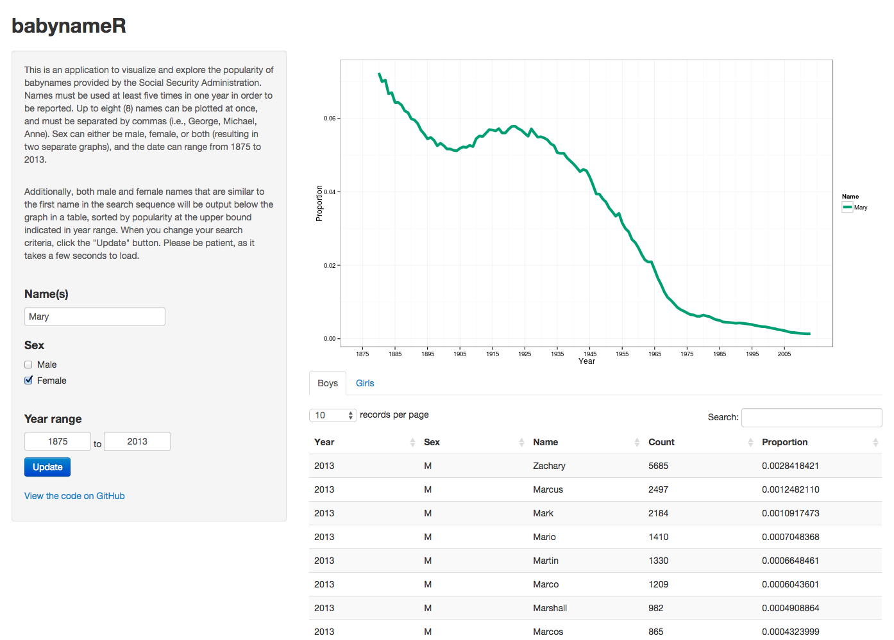

<!-- load jQuery for tooltips-->

<link rel="stylesheet" href="//code.jquery.com/ui/1.11.2/themes/smoothness/jquery-ui.css">
<script src="//code.jquery.com/jquery-1.10.2.js"></script>
<script src="//code.jquery.com/ui/1.11.2/jquery-ui.js"></script>

<style>
  label {
    display: inline-block;
    width: 5em;
  }
  </style>
  <script>
  $(function() {
    $( document ).tooltip({
      track: true
    });
  });
</script>

<section class="content">
<h1>Visualizations</h1>

<p style="border: 2px solid #333"></p>

<div id="container" style="width:800px">

<div id="visuals1" style="width:400px;float:left;text-align:center">
  <p><a href="https://dpmartin42.shinyapps.io/babynameR/" target="_blank" title="Visualizes the popularity of baby names over time. Built using R and Shiny."></a></p>
  <h3><font size = 5>babynameR</font></h3>
</div>

<div id="visuals2" style="width:400px;float:left;text-align:center">
  <p><a href="projects/Harry_Potter/Harry_Potter_Network.html" title="Visualizes character connections in the Harry Potter Universe. Built using R and sigma.js." target="_blank"></a></p>
  <h3><font size = 5>Wizarding Network of Harry Potter</font></h3>
</div>

<div id="visuals3" style="width:400px;float:left;text-align:center">
  <p><a href="https://dpmartin42.shinyapps.io/college-choice-app/" target="_blank" title="Creates a list of colleges that best matches user criteria. Built using R and Shiny."></a></p>
  <h3><font size = 5>School SelectR</font></h3>
</div>

<div id="visuals4" style="width:400px;float:left;text-align:center">
  <p><a href="projects/IAT_Map/state_map.html" title="Visualizes Implicit Association Test data over 10 years. Built using R and D3.js." target="_blank"></a></p>
  <h3><font size = 5>IAT State Map</font></h3>
</div>

<div id="footer" style="clear:both;text-align:center;">

</div>
  
</section>
